Model Views
Model Explorer
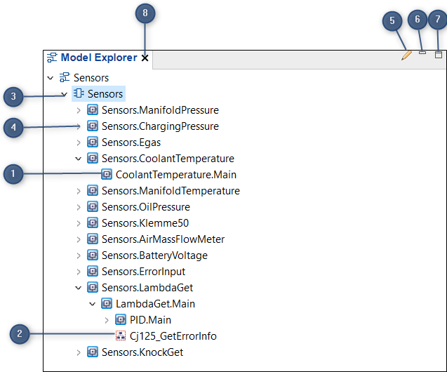
-
Complex Block
-
Hierarchical Element
-
Collapse
-
Expand
-
Edit Function Overview
-
Minimize
-
Maximize
-
Close
The Model Explorer allows you to explore the models of an EHANDBOOK container. Model Explorer displays the topics in the form of a tree structure. The topics present in the structure contain interactive models. The interactive models are displayed in the Model Viewer. An interactive model consists of Complex blocks and Hierarchical elements. A complex block is a representation of the entire model and hierarchical blocks represents a logical grouping of the model elements for a specific function.
|
Layout information and Highlighting/Hiding information is retained when you navigate between different elements in Model Explorer |
|
Seamless interconnection exists between Document Explorer, Model Explorer and Model Viewer. |
Navigation and selection in the Model Explorer is possible with the keyboard and the mouse.
Keyboard: Press Up arrow/Down arrow keys to move up and down the tree
structure. Press Right arrow key to expand and press Left arrow key to collapse
the levels within the tree structure. Navigate to the Model Explorer and press
Enter to view the content in the Model Viewer.
Mouse: Click Expand button (4) to expand the levels, and Collapse button (3) to
collapse the levels in the structure. To view the model in the Model Viewer, click
the relevant interactive model.
To close the Model Explorer, click Close (1). Click Maximize (6) or Minimize (5) to
maximize or minimize the Model Explorer.
|
The model views available for selection in the EHANDBOOK-NAVIGATOR depend on the provider of the EHANDBOOK container. |
The Model Viewer displays the model of an EHANDBOOK container. The Model Viewer is enabled only when an EHANDBOOK container is loaded. Whenever you select a model from the Model Explorer, the model relevant to the selected topic is displayed in the Model Viewer.
Clicking the model name in Document Explorer or Model Explorer displays the model in the Model Viewer.
If the model names are not available in the source model, then the Model Explorer displays blank names. When you hover the mouse over the blank name, a tool tip displays "No label info available in source model" for the same.
|
If you are using EHANDBOOK-NAVIGATOR in Basic Mode, then a dummy model is displayed in Model Viewer. The same dummy model is displayed whenever you try to access a model in Basic Mode. |
|
If you are using EHANDBOOK-NAVIGATOR in Basic Mode, then a dummy model is displayed in Model Viewer. The same dummy model is displayed whenever you try to access a model in Basic Mode. |
Wrong, incomplete or missing container content in the "Document Explorer" and the "Model Explorer" area in the EHANDBOOK-NAVIGATOR main screen!
Affected container contents will be displayed wrong, incomplete or can be missing in the EHANDBOOK-NAVIGATOR. The following information can be affected:
-
documentation texts
-
documentation structure
-
interactive models
Therefore, always check the container in the EHANDBOOK-NAVIGATOR for wrong, missing or incomplete content by validating that the container content corresponds to the ECU documentation source before you start working.
Before working with a container:
-
Open the container in the EHANDBOOK-NAVIGATOR
-
Validate that the container content corresponds to the ECU documentation sources using the "Document Explorer" and the "Model Explorer".
-
If you find model deviations, wrong, missing or incomplete content, contact the producer of the container to fix this errors.
To identify the cause for the wrong, missing or incomplete content, the producer of the container must check the source files from where the container was created. If the source files are correct and the appearance of the error is reproducible, the producer of the container must contact the local sales representative or the ETAS support to report this error.
Model Viewer
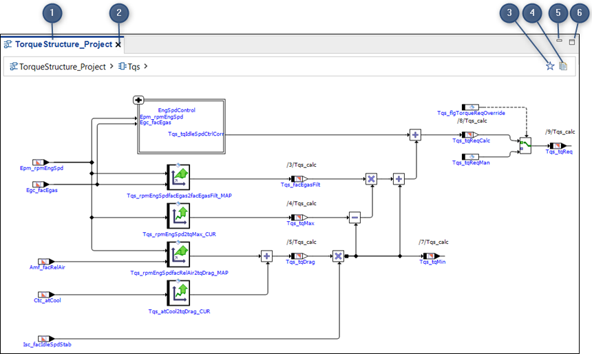
-
View Bar
-
Close
-
Bookmark
-
Copy Location
-
Minimize
-
Maximize
The Model Viewer is used to explore models interactively. The Model Viewer supports ASCET block diagram models, ASCET State Machines, Simulink models and C-Code derived models. The View Bar (1) of the Model Viewer displays the name of the interactive model currently displayed in the Model Viewer.
Navigation within models and across hierarchies is allowed. The model can be
moved from its position by clicking on it and then dragging it to the required position.
Scroll button can be used to zoom in and zoom out. To close the Document
Viewer, click Close (2). Click Create Bookmark (3) to create a bookmark. Click
Click to copy location to the clipboard (4) to copy a specific location and make
it easy to paste and click Minimize (5) or Maximize (6) to minimize/maximize the
Document Viewer.
Highlighting of the connections
The connections are highlighted in blue when you hover the mouse over any of the connections in the model viewer. It helps you to identify the ports or the connections which are interlinked. The highlighting will be disappeared when you move the mouse. If you want to retain the highlighting, then click on the same connection.
This works for ASCET block diagram models, Simulink models, C-Code derived models and function overview diagrams.
Differentiated Background for Multilevel Hierarchies:
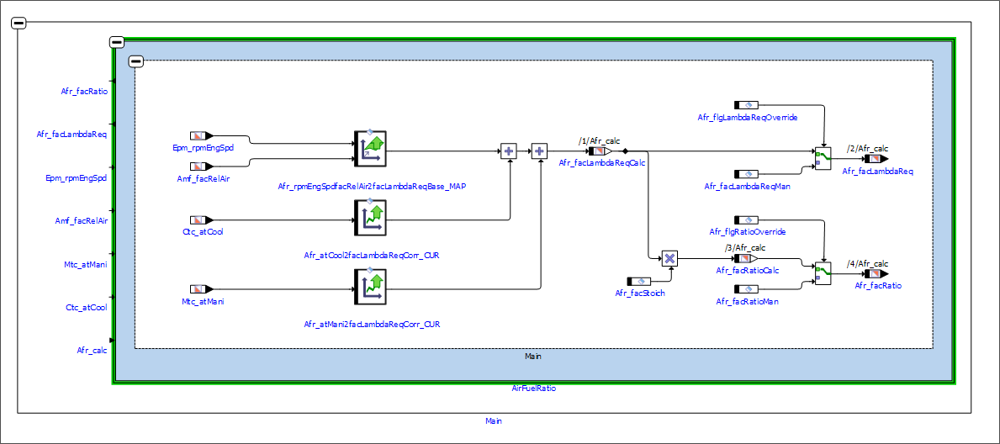
When you expand or expand out a block, the blocks are displayed in different background color. This enables you to easily differentiate the multilevel hierarchies in the model.
|
Differentiated background for multilevel hierarchies are supported for ASCET and Simulink models. |
You can modify the layout of the interactive model. Two types of model layouts are provided in the Model Viewer.
Auto Layout
Layout algorithms built in EHANDBOOK optimizes the block and connection placements and generates an automatic layout of the ASCET model/Simulink model/Function Overview Diagram.
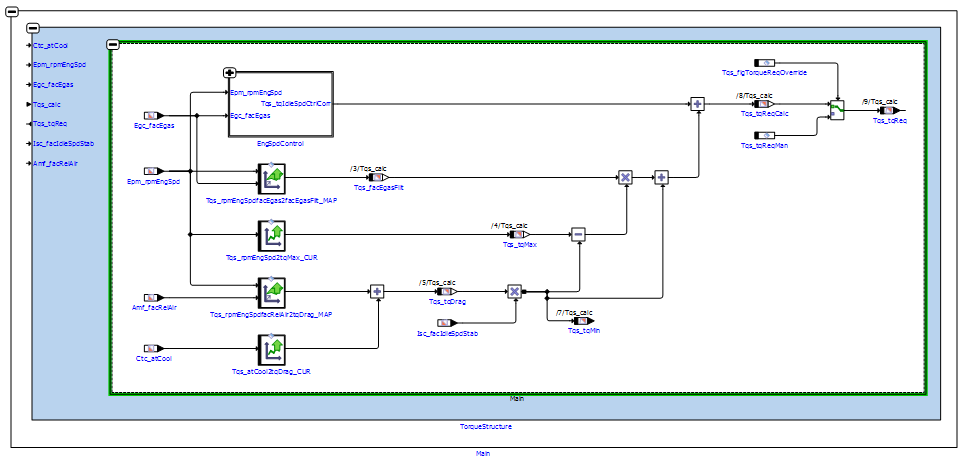
|
ASCET ESDL, C-Code components and CT-blocks are not supported in EHANDBOOK-NAVIGATOR. |
Virtual connections are displayed for expanded blocks. Virtual connections are additional connections that show the input and output connections of the hierarchical blocks with its parent blocks.
|
Virtual connections are shown only when auto layout is applied to the interactive model as they are not part of the default layout. |
|
Scalar calibration parameters in ASCET models are not shown as part of the interactive models in EHANDBOOK-NAVIGATOR as this data might be obsolete during calibration. |
-
Visualization of live values for measurement variables and calibration parameters from a connected INCA experiment.
-
Calculation and highlighting of dependencies between inputs and outputs of functions, calibration parameters and measurement variables.
-
Working with multiple interactive models in parallel.
-
Find in current tab can also be initiated in the Model Viewer. To display the Find in current tab box, Press
<CTRL+F>or press<F3>. -
The zoom level can be adjusted.
|
Make sure that high screen resolution setting is enabled during installation to view the Model Viewer and the Function Overview Diagrams properly. |
Print Diagram
Print Diagram allows you to check and customize the print settings for a model.
Print Diagram window is displayed when you invoke the printing action for a
model.
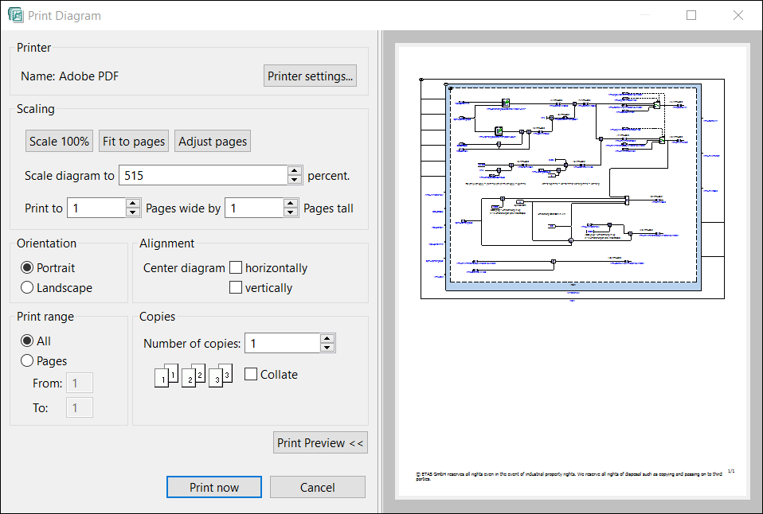
-
Print settings - Allows you to check and edit the general printer settings.
-
Scaling - Allows you to resize the model according to your requirements.
-
Scale 100% - Resizes the model to 100%.
-
Fit to pages - Resizes the model so that the entire model fits to the page/pages.
-
Adjust pages - Removes the empty pages.
-
Scale diagram to - Resizes the model based on the percentage set.
-
Print to - Allows you to Add/Remove pages horizontally or vertically for a model.
-
Pages wide by - Adds/Removes pages in horizontal position.
-
Pages tall - Adds/Removes pages in vertical position.
-
-
Orientation
-
Portrait - Sets the page orientation to Portrait.
-
Landscape - Sets the page orientation to Landscape.
-
-
Alignment
-
Center diagram - horizontally - Aligns the model in the center horizontally irrespective of the number of pages.
-
Center diagram - vertically - Aligns the model in the center vertically irrespective of the number of the pages.
-
-
Print Range - Allows you to select the pages for printing.
-
Copies - Allows you to set the number of copies for printing.
-
Collate - Arranges the printed sheets in a pre-determined sequence.
-
Print Preview - Displays/Hides the preview of the model in the Print Diagram window.
-
Print now - Prints the selected model.
|
If you are using EHANDBOOK-NAVIGATOR in Basic Mode, then a dummy model is displayed in Model Viewer. The same dummy model is displayed whenever you try to access a model in Basic Mode. The functionalities of Model can be performed on the dummy model available in Basic Mode. |
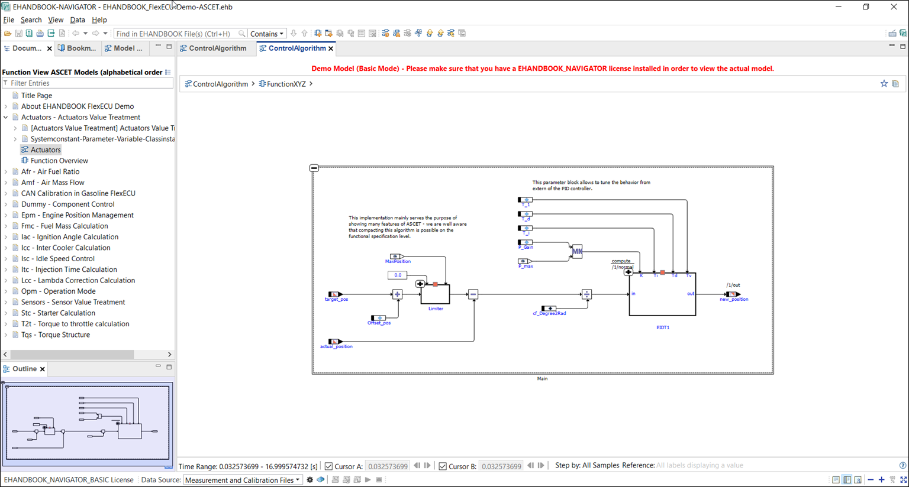
Context Menu
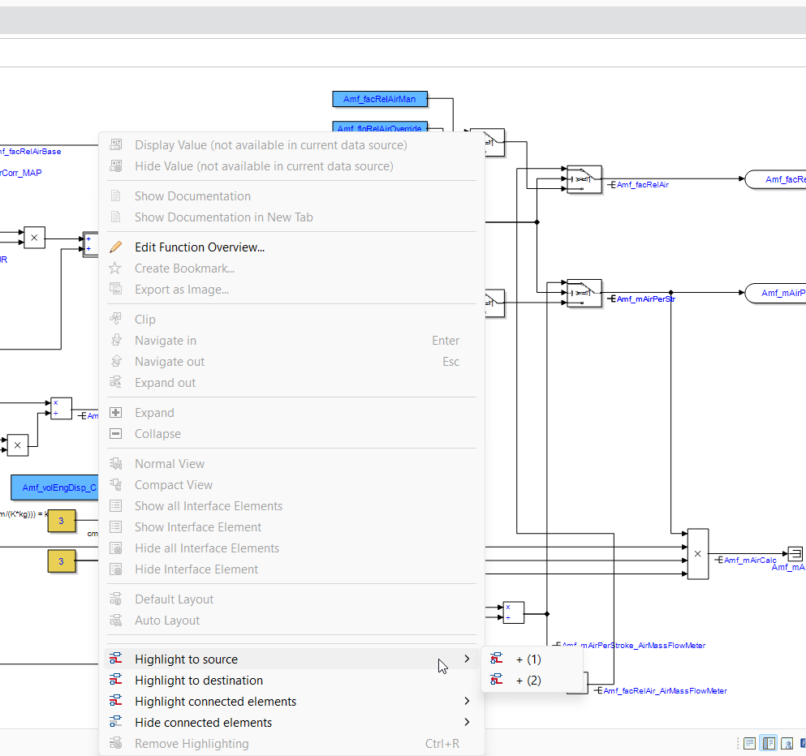
-
Context menu
|
Select the Model Block and then right-click or right-click on the Model block text to view the Interactive Model context menu. |
The Context Menu (1) contains the following menu items:
-
Display Value
Configures the block to display the value of the measurement variable when you start the visualization. -
Hide Value
Hides the value of the measurement variable for the model block that is already configured to display the measurement value. -
Copy
Allows you to copy text present in the interactive model. This option is active in the context menu, only if text strings are selected in the Model Viewer. -
Find in EHANDBOOK Files(s)
Initiates the search in all the loaded EHANDBOOK files for the selected text. This option is active in the context menu, only if a relevant entity (text strings, model blocks) is selected in the Model Viewer. -
Find in current tab
Initiates the search in the currently opened tab for the selected text. -
This option is active in the context menu, only if a relevant entity (text strings, model blocks) is selected in the Model Viewer.
-
Input
Highlight/hide inputs of the selected block. This option is displayed in the context menu, only if any model blocks is selected in the Model Viewer. -
Output
Highlight/hide outputs of the selected block. This option is displayed in the context menu, only if any model blocks is selected in the Model Viewer. -
Remove Highlighting
Removes the highlighting/hiding of dependencies. This option is active in the context menu, only if dependencies are highlighted/ hidden. -
Print…
Displays the Print dialog box. In the dialog box, specify the printer and invoke the printing action.
Function/Component Overview Diagram
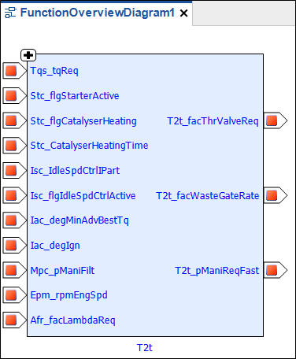
-
Importing Functions
-
Exporting Functions
Function Overview Diagram feature in EHANDBOOK-NAVIGATOR assists you in obtaining an overview between function components (FCs). ECU software function components are dependent on each other. EHANDBOOK-NAVIGATOR allows you to trace the communication occurring between functions.
The  icon is available at the top left corner of every Function Overview Diagram
if the corresponding function belongs to ASCET or Simulink or C_CODE based models. It helps to make the connections seamlessly in a single window for Function Overviews and Function Specifications (ASCET/Simulink) or Function Implementation (C-Code).
icon is available at the top left corner of every Function Overview Diagram
if the corresponding function belongs to ASCET or Simulink or C_CODE based models. It helps to make the connections seamlessly in a single window for Function Overviews and Function Specifications (ASCET/Simulink) or Function Implementation (C-Code).
In the function overview diagram the importing functions (1) are displayed on the left and the exported functions (2) are displayed on the right.
Press F3 to initiate a Find in current tab in the function overview diagram. When
a label is selected, the properties of the label are displayed in the Properties View.
|
Make sure that high screen resolution setting is enabled during installation to view the Model Viewer and the Function Overview Diagrams properly. |
|
If you are using EHANDBOOK-NAVIGATOR in Basic Mode, then a dummy Function Overview diagram is displayed. The same dummy Function Overview diagram is displayed whenever you try to access a Function Overview diagram. |
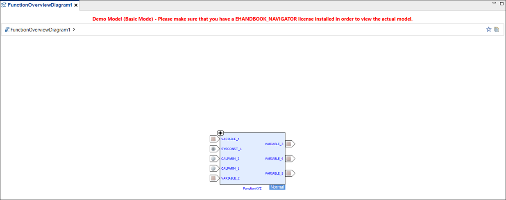
Component Overview diagram
In AUTOSAR (Classic) based ECU software, the algorithms of the ECU functions are represented by software components. These software components can have ports of different interface types (e.g., Sender/Receiver or Client/Server). The interfaces which type the ports can have additional entries (e.g., Data Elements as part of the Sender/Receiver interface). To establish communication, the ports must be connected via connectors.
When an EHANDBOOK Container contains component information that was based on AUTOSAR (Classic), the dependency between the components can be shown in the overview diagrams.
|
The communication between components is based on AUTOSAR ports and their connections. |
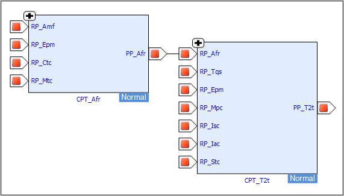
|
To show the ports between components and their dependencies, the AUTOSAR (Classic) Add-On for EHANDBOOK-NAVIGATOR is required. |
Connected and Non-connected Ports in Function Overview Diagrams
The ports in the Function Overview Diagrams are color coded. This helps you in identifying if the ports have any further connections or not. The connected ports are displayed in Red and non-connected ports are displayed in Grey. When you hover the mouse on the connected ports a hand pointer is displayed. Clicking on the connected ports display further functions, values of that port. The connections to the port are highlighted in green. Clicking on non-connected ports does not perform any action.
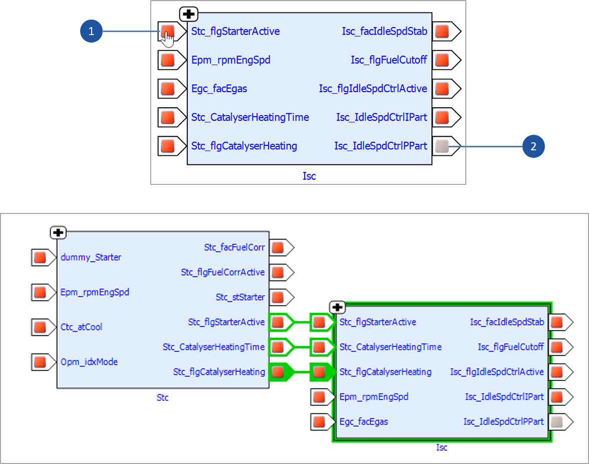
-
Connected ports
-
Non-connected ports
Normal and Compact Views in the Function Overview Diagrams
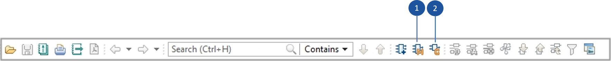
There are two types of view that are as listed below: * Normal View * Compact View
*Normal View *displays both connected ports and non-connected ports in the function overview diagram.
To apply normal view to a function overview diagram:
-
Open a function overview diagram.
Click on the toolbar.
Normal view is applied on the function overview diagram.
<Or> -
Right-click in the Model Viewer and select
Normal View.
<Or> -
Go to
Viewmenu and selectNormal View.
When you apply normal view to the function overview diagram a text is indicated at the bottom right corner of each function as shown in the image below:
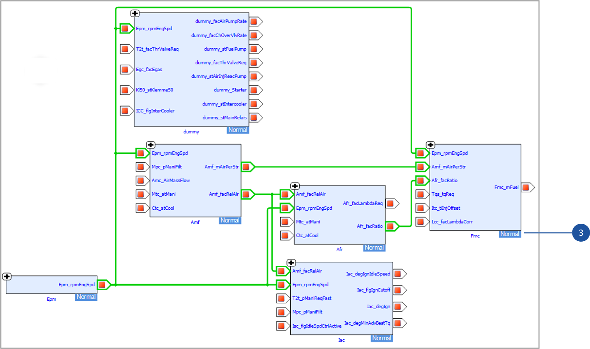
Compact View displays only the connected ports in the function overview dia- gram. The non-connected ports are hidden in the Compact View.
There is a text indication at the bottom right corner of each function which shows the type of the view that has been applied to the function.
|
To apply compact view to a function overview diagram:
-
Open a function overview diagram.
Click on the toolbar.
Compact view is applied on the function overview diagram.
<Or> -
Right-click in the Model Viewer and select
Compact View.
<Or> -
Go to
Viewmenu and selectCompact View.
When you apply compact view to the function overview diagram a text is indicated at the bottom right corner of each function as shown in the image below:
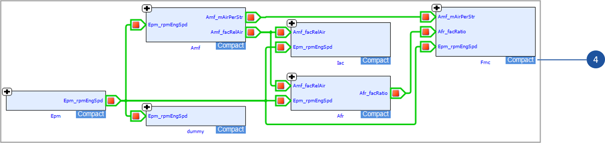
To apply normal or compact view to a specific function follow the steps below:
-
Select and Right-click on the function.
A context menu displays. -
Select
NormalorCompact View.
Selected view is applied on the model.
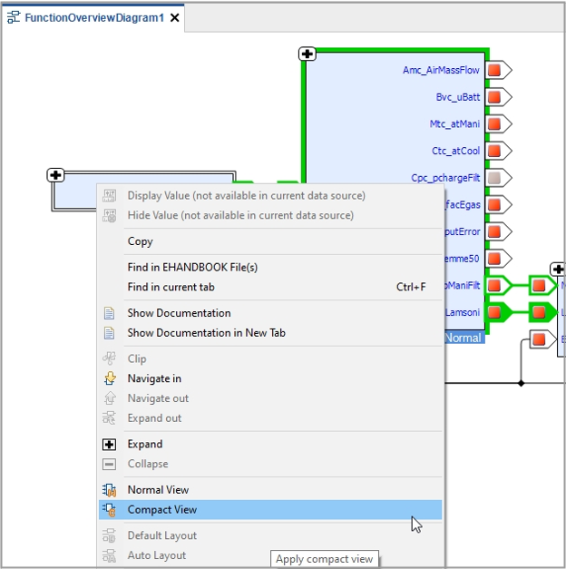
Show and Hide Interface Elements in the Function Overview Diagrams
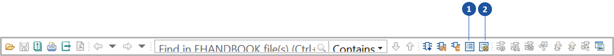
-
Show Interface Elements
-
Hide Interface Elements
Show Interface Elements displays interface elements of all the ports of the cur- rent selected function in the function overview diagram.
To display interface elements of a function overview diagram:
-
Open a function overview diagram.
Click on the toolbar.
Displays interface elements on all ports of the function overview diagram. <Or> -
Right-click in the Model Viewer and select
Show Interface Elements.
<Or> -
Go to View menu and select
Show Interface Elements.
When you apply Show Interface Elements to the function overview diagram port names are displayed in blue color and all the respective interface elements are displayed below each port in a tabular format as shown in the image below:
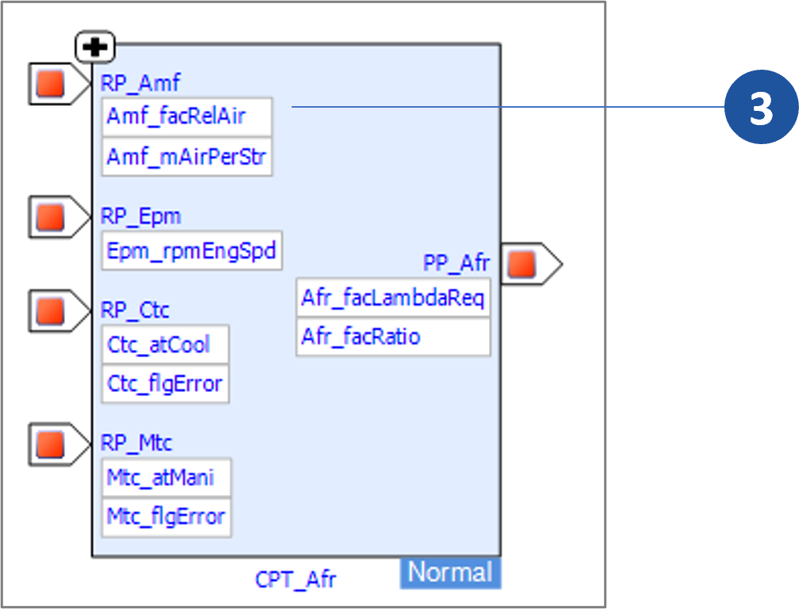
-
All interface elements are displayed
To view interface elements of a specific port, right click on the port and select
Show Interface Elements from the context menu. Only the selected port interface elements are displayed.
Hide Interface Elements hides interface elements of all the ports from the currently selected function in the function overview diagram.
To hide interface elements of a function overview diagram:
-
Open a function overview diagram.
Click on the toolbar.
Hides interface elements on all ports of the function overview diagram.
<Or> -
Right-click in the Model Viewer and select
Hide Interface Elements.
<Or> -
Go to
Viewmenu and selectHide Interface Elements.
When you apply Hide Interface Elements to the function overview diagram all the interface elements are hidden as shown in the image below:
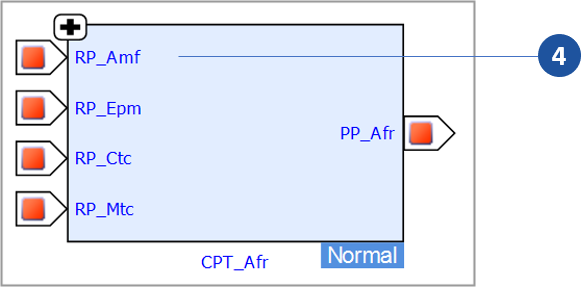
-
All interface elements are hidden
To hide interface elements of a specific port, right click on the port and select
Hide Interface Elements from the context menu. Only the selected port interface elements are hidden.
After adding interface elements to the function overview diagram and being connected to INCA Experiment or by loading a measurement file it is possible to display values additionally for the interface elements.
To display all values of a function overview diagram click in the status bar and to hide all values of a function overview diagram click in the status bar.
|
To Show/View info of an interface and interface element follow the steps below:
-
Click on the Interface element.
A label pop-up displays.
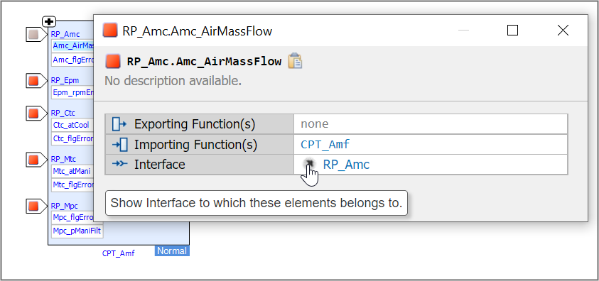
-
Click
 To pin and move the label pop-up.
To pin and move the label pop-up.
Label pop-up is pinned as a separate window.
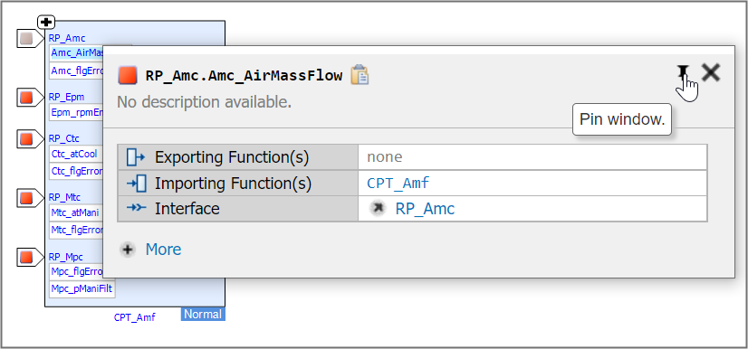
|
If a Label pop-up is not pinned, then it closes automatically when any other operation is performed in the application or when you click outside the pop-up area. |
-
Click . To view info of the parent Interface. A label pop-up displays.
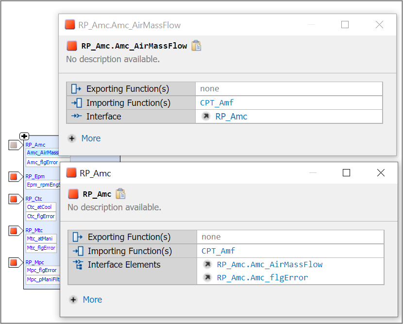
The label pop-up gets overlapped on the existing pop-up. To view both existing and latest pop-ups you need to pin and drag the latest pop-up to a different position.
-
Click . To view info of the Interface Element. A label pop-up displays.
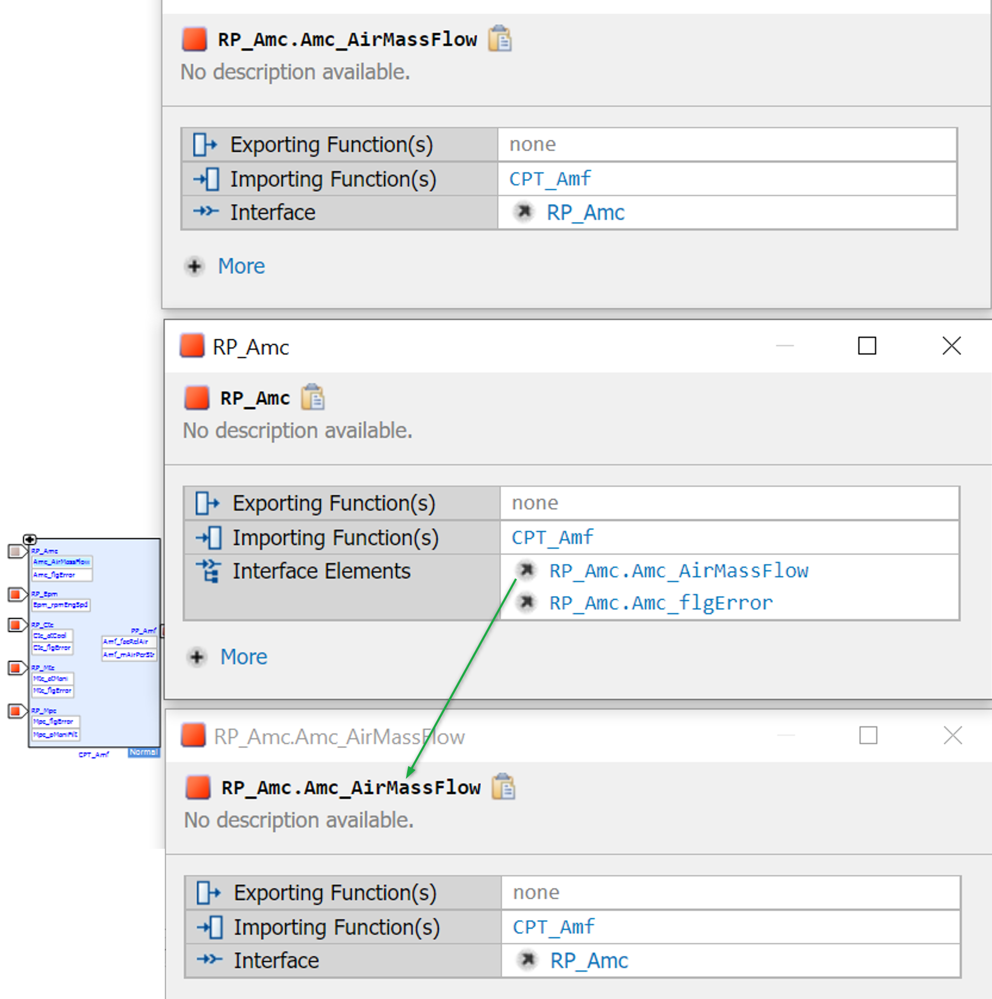
To display or hide values on a specific port of a function overview diagram follow the steps below:
-
Select and Right-click on the Port.
A context menu displays. -
Select
Display or Hide Value. Selected view is applied on the port.
When you apply display value to the selected port a table is displayed containing Name, Unit and Values as shown in the image below:
To view interface element of a specific port, hover the mouse on Show Interface
Element and select required Interface Element from the context menu, only the
selected port interface element is displayed. To hide interface element of a specific
port, hover the mouse on Hide Interface Element and select required Interface
Element from the context menu, only the selected port interface element is
hidden. To view all the interface elements select Show all Interface Elements
and to hide all the interface elements select Hide all Interface Elements.
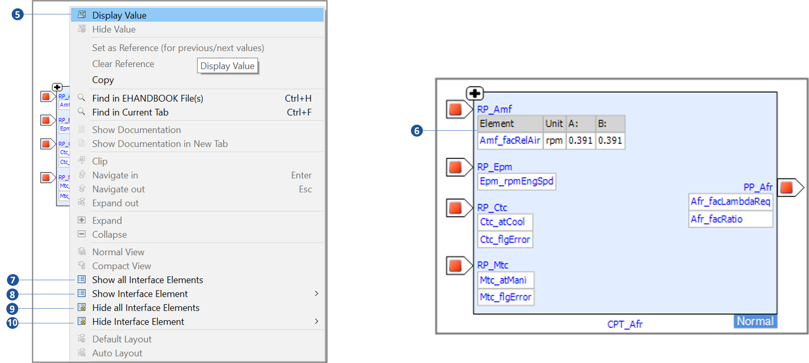
-
Display Value
-
Values are displayed
-
Show all Interface Elements
-
Show Interface Element
-
Hide all Interface Elements
-
Hide Interface Element
Annotate values to the Function Overview Diagram
The function overview diagrams derived from AUTOSAR (Classic) based ECU software, values can be annotated to the interface elements. Load Measurement and Calibration Files or Connect to INCA Experiment and keep the interface elements in a Display mode.
To display all values of a function overview diagram click in the status bar, and to hide all values of a function overview diagram click in the status bar.
Click  to start the visualization. You can view the live values of the measurement variables and calibration parameters in the interactive model.
to start the visualization. You can view the live values of the measurement variables and calibration parameters in the interactive model.
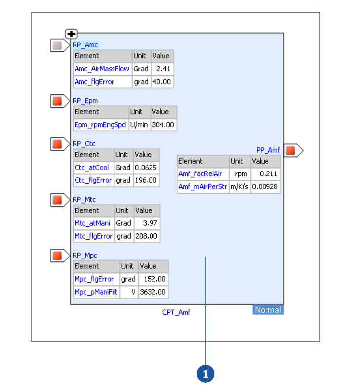
-
INCA Experiment Annotated view
You can view the Cursor A & B values. Click buttons to step forward/backward in time for the Cursors A & B.
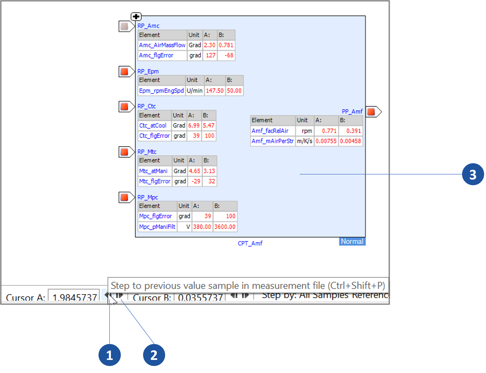
-
Backward
-
Forward
-
Measurement and Calibration files Annotated view
Outline View
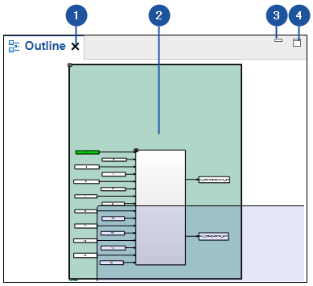
-
Close
-
Outline box
-
Minimize
-
Maximize
The Outline View provides an overview of the model displayed in the Model
Viewer. It shows the holistic view of the parent model. An Outline box(2)
indicates which section of the model is in focus in the Model Viewer. Outline view
allows you to navigate large models quickly and precisely. To navigate to any section
of the model in the Model Viewer, click and drag the Outline box to that section within the Outline view.
To close the Outline View, click Close (1). Click Minimize (3) or Maximize (4) to
minimize/maximize the Outline View.